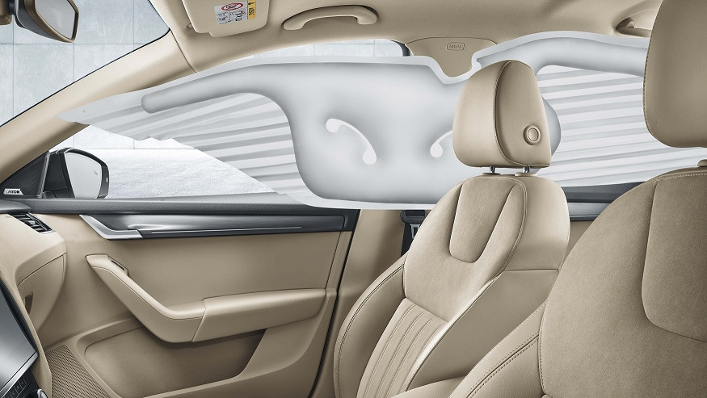

Краткое описание товара:
Чешский переднеприводный автомобиль класса С.
Семейный автомобиль для комфортного перемещения по городу и трассе.>

Подробное описание товара:
Дебютное поколение современной «Октавии» стало первой «Шкодой» созданной на всефольксвагеновской платформе, в данном случае — A4 (PQ34).
Главный дизайнер — Дирк ван Брекельruen, при участии Люка Донкерволькеruen.
Модель с кузовом лифтбэк начала выпускаться с 3 сентября 1996 года на прошедшем модернизацию заводе Škoda в Млада-Болеславе (Чешская Республика).
В открытии принимал участие президент страны Вацлав Гавел.
В дальнейшем производство разной степени локализации было также развёрнуто в Индии (на заводе Škoda Auto Indiaruen), в России (на заводе Volkswagen в Калуге),
на Украине (на заводе «Еврокар»), в Казахстане (на заводе Азия Авто).
Универсал под названием Octavia Combi был официально представлен в феврале 1998 года.
Через года была запущена в серию его полноприводная версия, а с 2001 года — полный привод стал доступен и для лифтбэка.
В варианте 4×4 задняя ось подключалась при помощи муфты Haldex, при признаках начала пробуксовки колёс передней оси>
Характеристики автомобиля:
Модификация 1.8 AMT
| Объем | 1.8 |
| Мощность | 180 л.с. |
| Коробка | робот |
| Тип двигателя | бензин |
| Топливо | АИ-95 |
| Привод | полный |
| Разгон | 7.4с |
| Расход | 6.6л |
Размеры, мм
| Длина | 4670 |
| Ширина | 1814 |
| Высота | 1461 |
| Колёсная база | 2686 |
| Клиренс | 138 |
| Ширина передней колеи | 1549 |
| Ширина задней колеи | 1540 |
| Размер колёс | 205/55/R16 |
Объём и масса
| Объем багажника мин/макс | л590/1580 |
| Объём топливного бака | л50 |
| Снаряженная масса | кг1428 |
| Полная масса | кг1938 |

Полный арсенал средств для безопасного движения
ŠKODA OCTAVIA сконструирована на платформе MQB, которая является основой для разных моделей концерна Volkswagen, в том числе бренда премиум-класса Audi.
Поэтому не удивляйтесь тому, что для ŠKODA OCTAVIA предлагается намного больше систем безопасности, чем для автомобилей конкурирующих марок.
Например, в состав электронной системы поддержания курсовой устойчивости ESC, стандартной для большинства комплектаций ŠKODA OCTAVIA, входит несколько
подсистем: XDS+ отвечает за более точное прохождение поворотов, перераспределяя тягу между ведущими колёсами, EDS улучшает проходимость, заменяя блокировку
дифференциала, Multicollision Brake уменьшает вероятность повторных столкновений после первого сильного удара в ДТП: автомобиль начнёт тормозить в автоматическом режиме.